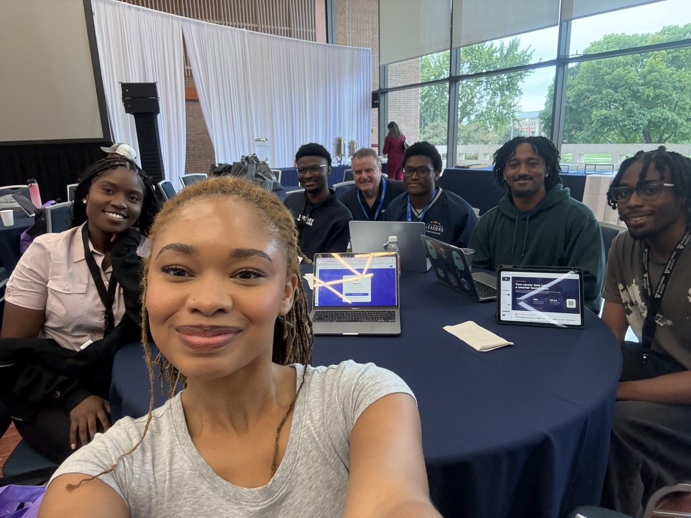
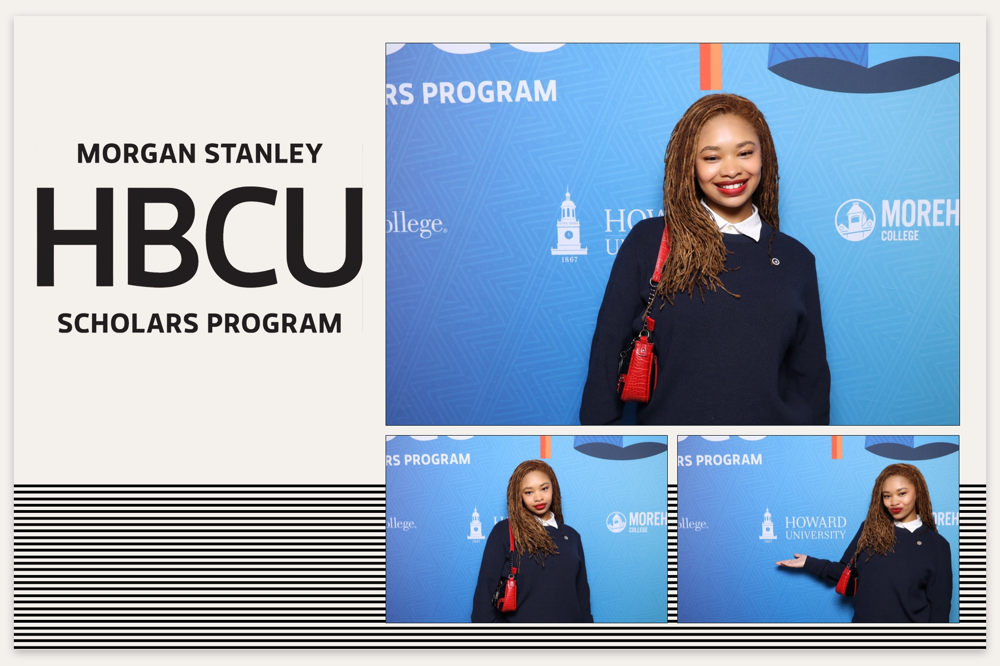
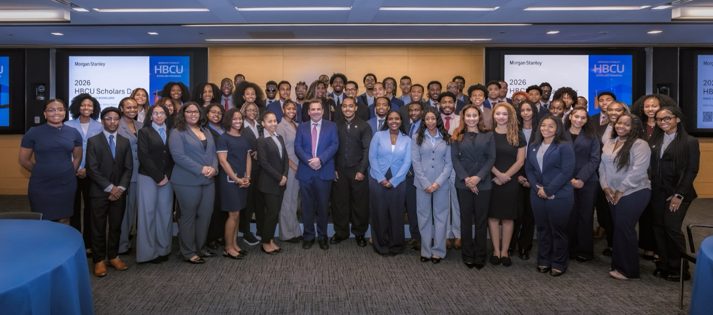

Jaila Walker
Blackburn Center, Howard University

Jaila WalkerAWS-MLU AI Symposium
September 21, 2026
Recent events I’ve attended.
No posts yet. Check back soon.

Jaila WalkerAWS-MLU AI Symposium
September 21, 2026


Jaila WalkerMorgan Stanley HBCU Day!
September 13, 2026